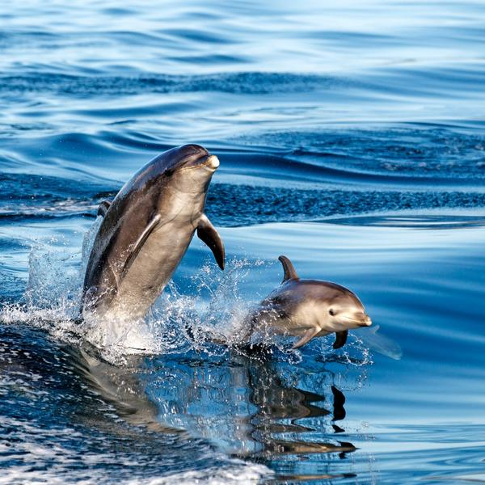
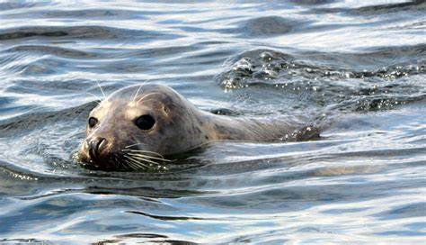
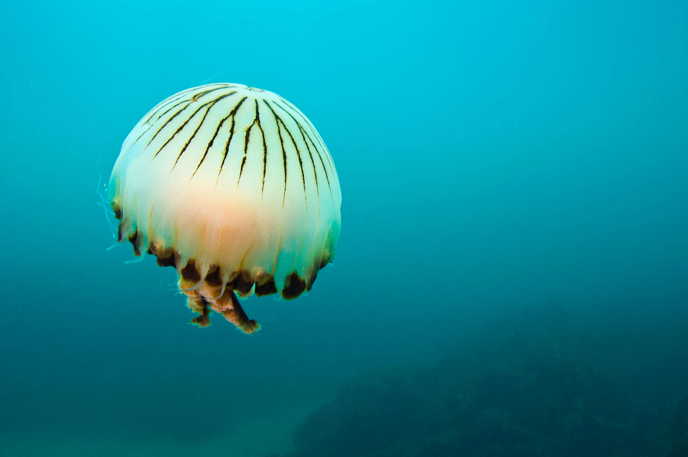
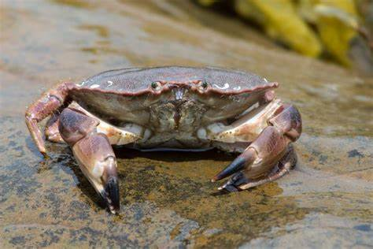
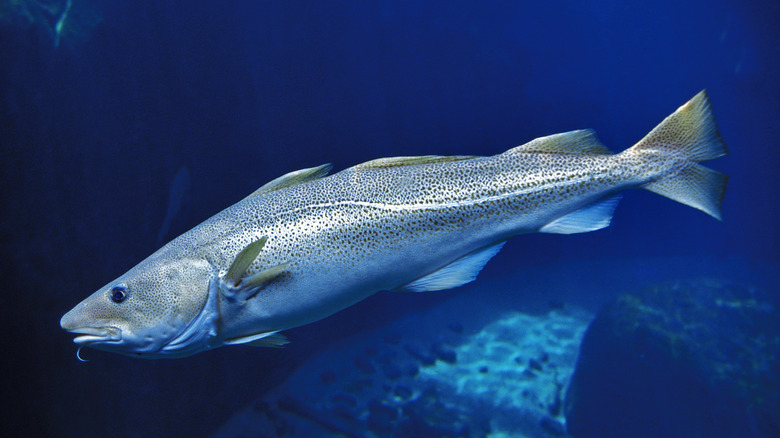

Lets look at some of the sea life we have in Ireland, from fish, to crabs, and larger mammals.
Common Dolphin

The common dolphin is one of the most popular species found in the waters of Ireland, they can be easily recognised
by the yellow and gray patches they have on their side.
Dolphins are known to be very friendly and social creatures. Their diet mainly consists of small fish such as herring, and sometimes squid.
Common dolphins prefer warmer waters, meaning you can spot them often during the summer months.
Common dolphines are usually around 1.7-25metres long, with males being slightly larger.
Grey Seal

Gray seals are very popular along the rocky coastlines of Ireland, we can often see them in the waters in Howth, where
you are also able to feed them fish. Their favourite fish is herring, cod, and sandeel.
Although sometimes, they also feed on squid and crustaceans. Grey seals usually breed off the shore of smaller islands
where there is less human traffic.
Males typically have longer noses and bigger forheads, they are also significantly larger than female seals.
Jellyfish

Jellyfish are important in our marine ecosystem. They mainly feed on the plankton, fish eggs, and crustaceans.
They catch their prey by stinging them with their tentacles, their poison paralyse the prey and then the jellyfish
consumes them.
Jellyfish can be found along the coast waters and beaches all around Ireland, they mainly live in waters with strong currents.
In appearance, they are transparent but they have several colour hues depending on the species and environment.
Most jellyfish in Ireland are harmless, but it is good to be cautious aroun them anyways.
Crab

Crabs are a type of crustacean that is commonly seen on the shores, usually dead. Their diet consists of algae,
mollusks, and worms.
Different types of crabs have a different diet, some hunt their prey while some eat the available
plant matter. Many crabs have adapted to both water and land environments.
They have a flat body that coverd their head and have eight legs. Certain species of crab blend in with their environment while
other species have beautiful bright colours.
Cod

Cod is widely known fish here in Ireland, mostly seen battered and fried in fish and chips shops in Irish towns.
A cods diet consists of smaller fish such as herring, sandeels, and sprat.
They easily adapt to other food too, they eat what is available to them.
They live in our coastal waters and deeper waters further away. Cod have a long body with sharp teeth and a big mouth.
Their skin is a greyish brown with a light belly, which helps them blend in with the environment.
Some cod can weigh up to 20kg and reach lengths of up to 1.5 metres.